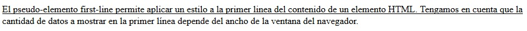
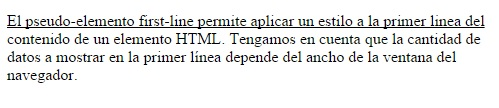

Los pseudo-elementos a diferencia de las pseudo-clases afectan a parte de un elemento HTML y no al elemento completo.
Los primeros dos pseudo-elementos que veremos son first-letter y first-line.
El pseudo-elemento first-letter permite seleccionar la primer letra del contenido de un elemento HTML y aplicarle un estilo. Veamos por ejemplo si queremos que la primer letra de un párrafo aparezca con un tamaño de fuente mayor y otro color:
<p>Esto es la prueba del pseudo-elemento first-letter.</p>
Definimos:
p::first-letter {
font-size:1.5em;
color:red;
}
Tenemos como resultado luego:
La sintaxis para definir un pseudo-elemento es distinta a las pseudo-clases ya que le antecedemos dos caracteres :: en lugar de uno.
Si no tuvieramos los pseudo-elementos este problema lo debemos resolver encerrando el primer caracter de un párrafo con el elemento HTML "span" y asignarle un estilo a dicho elemento. Luego gracias a esto tenemos un contenido del archivo HTML mucho más limpio.
El pseudo-elemento first-line permite seleccionar la primer línea de texto de un elemento HTML para aplicar un estilo.
Si tenemos la siguiente página:
<!DOCTYPE html> <html> <head> <title>Problema</title> <link rel="StyleSheet" href="estilos.css" type="text/css"> </head> <body> <p>El pseudo-elemento first-line permite aplicar un estilo a la primer linea del contenido de un elemento HTML. Tengamos en cuenta que la cantidad de datos a mostrar en la primer línea depende del ancho de la ventana del navegador.</p> </body> </html>
estilos.css
p::first-line {
text-decoration:underline;
}
Tenemos como resultado en el navegador:
Tengamos en cuenta que si redimensionamos el navegador solo los caracteres de la primer línea aparecen subrayados:
